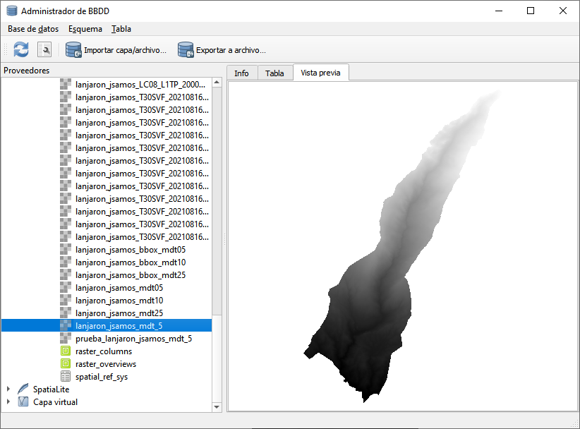

6 Acceder y mostrar información de una BD desde el Administrador de BBDD de QGIS
Podemos usar el Administrador de BBDD de QGIS para acceder al contenido de las capas y mostrar una vista previa de estas sin necesidad de añadirlas a un proyecto.
Para poder acceder a una BD, debemos definir previamente una conexión a esta, como se describe en el apartado 5.2.1.
Accedemos al Administrador de BBDD pulsando sobre Base de datos > Administrador de bases de datos…

Figura 6.1: Vista previa en el Administrador de BBDD.
En el apartado Proveedores, en el lateral izquierdo de la ventana que se abre (figura 6.1), seleccionamos la BD desplegando el tipo correspondiente. En esa misma zona, para la BD, seleccionamos la tabla que queremos ver. En la hoja Vista previa, en el lateral derecho, se muestra la capa.